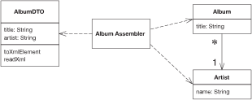
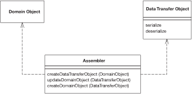
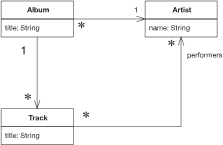
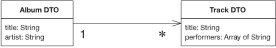

An object that carries data between processes in order to reduce the number of method calls.

When you’re working with a remote interface, such as Remote Facade (388), each call to it is expensive. As a result you need to reduce the number of calls, and that means that you need to transfer more data with each call. One way to do this is to use lots of parameters. However, this is often awkward to program—indeed, it’s often impossible with languages such as Java that return only a single value.
The solution is to create a Data Transfer Object that can hold all the data for the call. It needs to be serializable to go across the connection. Usually an assembler is used on the server side to transfer data between the DTO and any domain objects.
Many people in the Sun community use the term “Value Object” for this pattern. I use it to mean something else. See the discussion on page 487.
In many ways, a Data Transfer Object is one of those objects our mothers told us never to write. It’s often little more than a bunch of fields and the getters and setters for them. The value of this usually hateful beast is that it allows you to move several pieces of information over a network in a single call—a trick that’s essential for distributed systems.
Whenever a remote object needs some data, it asks for a suitable Data Transfer Object. The Data Transfer Object will usually carries much more data than what the remote object requested, but it should carry all the data the remote object will need for a while. Due to the latency costs of remote calls, its better to err on the side of sending too much data than have to make multiple calls.
A single Data Transfer Object usually contains more than just a single server object. It aggregates data from all the server objects that the remote object is likely to want data from. Thus, if a remote object requests data about an order object, the returned Data Transfer Object will contain data from the order, the customer, the line items, the products on the line items, the delivery information—all sorts of stuff.
You can’t usually transfer objects from a Domain Model (116). This is because the objects are usually connected in a complex web that’s difficult, if not impossible, to serialize. Also you usually don’t want the domain object classes on the client, which is tantamount to copying the whole Domain Model (116) there. Instead you have to transfer a simplified form of the data from the domain objects.
The fields in a Data Transfer Object are fairly simple, being primitives, simple classes like strings and dates, or other Data Transfer Objects. Any structure between data transfer objects should be a simple graph structure—normally a hierarchy—as opposed to the more complicated graph structures that you see in a Domain Model (116). Keep these simple attributes because they have to be serializable and they need to be understood by both sides of the wire. As a result the Data Transfer Object classes and any classes they reference must be present on both sides.
It makes sense to design the Data Transfer Object around the needs of a particular client. That’s why you often see them corresponding to Web pages or GUI screens. You may also see multiple Data Transfer Objects for an order, depending on the particular screen. Of course, if different presentations require similar data, then it makes sense to use a single Data Transfer Object to handle them all.
A related question to consider is using a single Data Transfer Object for a whole interaction versus different ones for each request. Different Data Transfer Objects make it easier to see what data is transferred in each call, but leads to a lot of Data Transfer Objects. One is less work to write, but makes it harder to see how each call transfers information. I’m inclined to use just one if there’s a lot of commonality over the data, but I don’t hesitate to use different Data Transfer Objects if a particular request suggests it. It’s one of those things you can’t make a blanket rule about, so I might use one Data Transfer Object for most of the interaction and use different ones for a couple of requests and responses.
A similar question is whether to have a single Data Transfer Object for both request and response or separate ones for each. Again, there’s no blanket rule. If the data in each case is pretty similar, use one. If they’re very different, I use two.
Some people like to make Data Transfer Objects immutable. In this scheme you receive one Data Transfer Object from the client and create and send back a different one, even if it’s the same class. Other people alter the request Data Transfer Object. I don’t have any strong opinions either way, but on the whole I prefer a mutable Data Transfer Object because it’s easier to put the data in gradually, even if you make a new object for the response. Some arguments in favor of immutable Data Transfer Object have to do with the naming confusion with Value Object (486).
A common form for Data Transfer Object is that of a Record Set (508), that is, a set of tabular records—exactly what you get back from a SQL query. Indeed, a Record Set (508) is the Data Transfer Object for a SQL database. Architectures often use it throughout the design. A domain model can generate a Record Set (508) of data to transfer to a client, which the client treats as if it was coming directly from SQL. This is useful if the client has tools that bind to Record Set (508) structures. The Record Set (508) can be entirely created by the domain logic, but more likely it’s generated from a SQL query and modified by the domain logic before it’s passed on to the presentation. This style lends itself to Table Module (125).
Another form of Data Transfer Object is as a generic collection data structure. I’ve seen arrays used for this, but I discourage that because the array indices obscure the code. The best collection is a dictionary because you can use meaningful strings as keys. The problem is that you lose the advantage of an explicit interface and strong typing. A dictionary can be worth using for ad hoc cases when you don’t have a generator at hand, as it’s easier to manipulate one than to write an explicit object by hand. However, with a generator I think you’re better off with an explicit interface, especially when you consider that it is being used as communication protocol between different components.
Serializing the Data Transfer Object Other than simple getters and setters, the Data Transfer Object is also usually responsible for serializing itself into some format that will go over the wire. Which format depends on what’s on either side of the connection, what can run over the connection itself, and how easy the serialization is. A number of platforms provide built in serialization for simple objects. For example, Java has a built-in binary serialization and .NET has built-in binary and XML serializations. If there’s a built-in serialization, it usually works right out of the box because Data Transfer Objects are simple structures that don’t deal with the complexities you run into with objects in a domain model. As a result I always use the automatic mechanism if I can.
If you don’t have an automatic mechanism, you can usually create one yourself. I’ve seen several code generators that take a simple record descriptions and generate appropriate classes to hold the data, provide accessors, and read and write the data serializations. The important thing is to make the generator only as complicated as you actually need it to be, and don’t try to put in features you only think you’ll need. It can be a good idea to write the first classes by hand and then use them to help you write the generator.
You can also use reflective programming to handle the serialization. That way you only have to write the serialization and deserialization routines once and put them in a superclass. There may be a performance cost to this; you’ll have to measure it to find out if the cost is significant.
You have to choose a mechanism that both ends of the connection will work with. If you control both ends, you pick the easiest one; if you don’t, you may be able to provide a connector at the end you don’t own. Then you can use a simple Data Transfer Object on both sides of the connection and use the connector to adapt to the foreign component.
One of the most common issues you face with Data Transfer Object is whether to use a text or a binary serialization form. Text serializations are easy to read to learn what’s being communicated. XML is popular because you can easily get tools to create and parse XML documents. The big disadvantages with text are that it needs more bandwidth to send the same data (something particularly true of XML) and there’s often a performance penalty, which can be quite significant.
An important factor for serialization is the synchronization of the Data Transfer Object on each side of the wire. In theory, whenever the server changes the definition of the Data Transfer Object, the client updates as well but in practice this may not happen. Accessing a server with an out-of-date client always leads to problems, but the serialization mechanism can make the problems more or less painful. With a pure binary serialization of a Data Transfer Object the result will be that its communication is entirely lost, since any change to its structure usually causes an error on deserialization. Even an innocuous change, such as adding an optional field, will have this effect. As a result direct binary serialization can introduce a lot of fragility into the communication lines.
Other serialization schemes can avoid this. One is XML serialization, which can usually be written in a way that makes the classes more tolerant of changes. Another is a more tolerant binary approach, such as serializing the data using a dictionary. Although I don’t like using a dictionary as the Data Transfer Object, it can be a useful way of doing a binary serialization of the data, since that introduces some tolerance into the synchronization.
Assembling a Data Transfer Object from Domain Objects A Data Transfer Object doesn’t know about how to connect with domain objects. This is because it should be deployed on both sides of the connection. For that reason I don’t want the Data Transfer Object to be dependent on the domain object. Nor do I want the domain objects to be dependent of the Data Transfer Object since the Data Transfer Object structure will change when I alter interface formats. As a general rule, I want to keep the domain model independent of the external interfaces.
As a result I like to make a separate assembler object responsible for creating a Data Transfer Object from the domain model and updating the model from it (Figure 15.4). The assembler is an example of a Mapper (473) in that it maps between the Data Transfer Object and the domain objects.
I may also have multiple assemblers share the same Data Transfer Object. A common case for this is different update semantics in different scenarios using the same data. Another reason to separate the assembler is that the Data Transfer Object can easily be generated automatically from a simple data description. Generating the assembler is more difficult and indeed often impossible.

Figure 15.4 An assembler object can keep the domain model and the data transfer objects independent of each other.
Use a Data Transfer Object whenever you need to transfer multiple items of data between two processes in a single method call.
There are some alternatives to Data Transfer Object, although I’m not a fan of them. One is to not use an object at all but simply to use a setting method with many arguments or a getting method with several pass-by reference arguments. The problem is that many languages, such as Java, allow only one object as a return value, so, although this can be used for updates, it can’t be used for retrieving information without playing games with callbacks.
Another alternative is to use a some form of string representation directly, without an object acting as the interface to it. Here the problem is that everything else is coupled to the string representation. It’s good to hide the precise representation behind an explicit interface; that way, if you want to change the string or replace it with a binary structure, you don’t have to change anything else.
In particular, it’s worth creating a Data Transfer Object when you want to communicate between components using XML. The XML DOM is a pain in the neck to manipulate, and it’s much better to use a Data Transfer Object that encapsulates it, especially since the Data Transfer Object is so easy to generate.
Another common purpose for a Data Transfer Object is to act as a common source of data for various components in different layers. Each component makes some changes to the Data Transfer Object and then passes it on to the next layer. The use of Record Set (508) in COM and .NET is a good example of this, where each layer knows how to manipulate record set based data, whether it comes directly from a SQL database or has been modified by other layers. .NET expands on this by providing a built-in mechanism to serialize record sets into XML.
Although this book focuses on synchronous systems, there’s an interesting asynchronous use for Data Transfer Object. This is where you want to use an interface both synchronously and asynchronously. Return a Data Transfer Object as usual for the synchronous case; for the asynchronous case create a Lazy Load (200) of the Data Transfer Object and return that. Connect the Lazy Load (200) to wherever the results from the asynchronous call should appear. The user of the Data Transfer Object will block only when it tries to access the results of the call.
[Alur et al.] discuss this pattern under the name Value Object, which I said earlier is equivalent to my Data Transfer Object; my Value Object (486) is a different pattern entirely. This is a name collision; many people have used “Value Object” in the sense that I use it. As far as I can tell, its use to mean what I call Data Transfer Object occurs only within the J2EE community. As a result, I’ve followed the more general usage.
The Value Object Assembler [Alur et al.] is a discussion of the assembler. I chose not to make it a separate pattern, although I use the “assembler” name rather than a name based on Mapper (473).
[Marinescu] discusses Data Transfer Object and several implementation variants. [Riehle et al.] discuss flexible ways to serialize, including switching between different forms of serialization.
For this example I’ll use the domain model in Figure 15.5. The data I want to transfer is the data about these linked objects, and the structure for the data transfer objects is the one in Figure 15.6.

Figure 15.5 A class diagram of artists and albums.

Figure 15.6 A class diagram of data transfer objects.
The data transfer objects simplify this structure a good bit. The relevant data from the artist class is collapsed into the album DTO, and the performers for a track are represented as an array of strings. This is typical of the collapsing of structure you see for a data transfer object. There are two data transfer objects present, one for the album and one for each track. In this case I don’t need one for the artist, as all the data is present on one of the other two. I only have the track as a transfer object because there are several tracks in the album and each one can contain more than one data item.
Here’s the code to write a Data Transfer Object from the domain model. The assembler is called by whatever object is handling the remote interface, such as a Remote Facade (388).
class AlbumAssembler...
public AlbumDTO writeDTO(Album subject) {
AlbumDTO result = new AlbumDTO();
result.setTitle(subject.getTitle());
result.setArtist(subject.getArtist().getName());
writeTracks(result, subject);
return result;
}
private void writeTracks(AlbumDTO result, Album subject) {
List newTracks = new ArrayList();
Iterator it = subject.getTracks().iterator();
while (it.hasNext()) {
TrackDTO newDTO = new TrackDTO();
Track thisTrack = (Track) it.next();
newDTO.setTitle(thisTrack.getTitle());
writePerformers(newDTO, thisTrack);
newTracks.add(newDTO);
}
result.setTracks((TrackDTO[]) newTracks.toArray(new TrackDTO[0]));
}
private void writePerformers(TrackDTO dto, Track subject) {
List result = new ArrayList();
Iterator it = subject.getPerformers().iterator();
while (it.hasNext()) {
Artist each = (Artist) it.next();
result.add(each.getName());
}
dto.setPerformers((String[]) result.toArray(new String[0]));
}
Updating the model from the ata Transfer Object is usually more involved. For this example there’s a difference between creating a new album and updating an existing one. Here’s the creation code:
class AlbumAssembler...
public void createAlbum(String id, AlbumDTO source) {
Artist artist = Registry.findArtistNamed(source.getArtist());
if (artist == null)
throw new RuntimeException("No artist named " + source.getArtist());
Album album = new Album(source.getTitle(), artist);
createTracks(source.getTracks(), album);
Registry.addAlbum(id, album);
}
private void createTracks(TrackDTO[] tracks, Album album) {
for (int i = 0; i < tracks.length; i++) {
Track newTrack = new Track(tracks[i].getTitle());
album.addTrack(newTrack);
createPerformers(newTrack, tracks[i].getPerformers());
}
}
private void createPerformers(Track newTrack, String[] performerArray) {
for (int i = 0; i < performerArray.length; i++) {
Artist performer = Registry.findArtistNamed(performerArray[i]);
if (performer == null)
throw new RuntimeException("No artist named " + performerArray[i]);
newTrack.addPerformer(performer);
}
}
Reading the DTO involves quite a few decisions. Noticeable here is how to deal with the artist names as they come in. My requirements are that artists should already be in a Registry (480) when I create the album, so if I can’t find an artist this is an error. A different create method might decide to create artists when they’re mentioned in the Data Transfer Object.
For this example I have a different method for updating an existing album.
class AlbumAssembler...
public void updateAlbum(String id, AlbumDTO source) {
Album current = Registry.findAlbum(id);
if (current == null)
throw new RuntimeException("Album does not exist: " + source.getTitle());
if (source.getTitle() != current.getTitle()) current.setTitle(source.getTitle());
if (source.getArtist() != current.getArtist().getName()) {
Artist artist = Registry.findArtistNamed(source.getArtist());
if (artist == null)
throw new RuntimeException("No artist named " + source.getArtist());
current.setArtist(artist);
}
updateTracks(source, current);
}
private void updateTracks(AlbumDTO source, Album current) {
for (int i = 0; i < source.getTracks().length; i++) {
current.getTrack(i).setTitle(source.getTrackDTO(i).getTitle());
current.getTrack(i).clearPerformers();
createPerformers(current.getTrack(i), source.getTrackDTO(i).getPerformers());
}
}
As for updates you can decide to either update the existing domain object or destroy it and replace it with a new one. The question here is whether you have other objects referring to the object you want to update. In this code I’m updating the album since I have other objects referring to it and its tracks. However, for the title and performers of a track I just replace the objects that are there.
Another question concerns an artist changing. Is this changing the name of the existing artist or changing the artist the album is linked to? Again, these questions have to be settled on a case-by-use case basis, and I’m handling it by linking to a new artist.
In this example I’ve used native binary serialization, which means I have to be careful that the Data Transfer Object classes on both sides of the wire are kept in sync. If I make a change to the data structure of the server Data Transfer Object and don’t change the client, I’ll get errors in the transfer. I can make the transfer more tolerant by using a map as my serialization.
class TrackDTO...
public Map writeMap() {
Map result = new HashMap();
result.put("title", title);
result.put("performers", performers);
return result;
}
public static TrackDTO readMap(Map arg) {
TrackDTO result = new TrackDTO();
result.title = (String) arg.get("title");
result.performers = (String[]) arg.get("performers");
return result;
}
Now, if I add a field to the server and use the old client, although the new field won’t be picked up by the client, the rest of the data will transfer correctly.
Of course, writing the serialization and deserialization routines like this is tedious. I can avoid much of this tedium by using a reflective routine such as this on the Layer Supertype (475):
class DataTransferObject...
public Map writeMapReflect() {
Map result = null;
try {
Field[] fields = this.getClass().getDeclaredFields();
result = new HashMap();
for (int i = 0; i < fields.length; i++)
result.put(fields[i].getName(), fields[i].get(this));
} catch (Exception e) {throw new ApplicationException (e);
}
return result;
}
public static TrackDTO readMapReflect(Map arg) {
TrackDTO result = new TrackDTO();
try {
Field[] fields = result.getClass().getDeclaredFields();
for (int i = 0; i < fields.length; i++)
fields[i].set(result, arg.get(fields[i].getName()));
} catch (Exception e) {throw new ApplicationException (e);
}
return result;
}
Such a routine will handle most cases pretty well (although you’ll have to add extra code to handle primitives).
As I write this, Java’s XML handling is very much in flux and APIs, still volatile, are generally getting better. By the time you read it this section may be out of date or completely irrelevant, but the basic concept of converting to XML is pretty much the same.
First I get the data structure for the Data Transfer Object; then I need to decide how to serialize it. In Java you get free binary serialization simply by using a marker interface. This works completely automatically for a Data Transfer Object so it’s my first choice. However, text-based serialization is often necessary. For this example then, I’ll use XML.
For this example, I’m using JDOM since that makes working with XML much easier than using the W3C standard interfaces. I write methods to read and write an XML element to represent each Data Transfer Object class.
class AlbumDTO...
Element toXmlElement() {
Element root = new Element("album");
root.setAttribute("title", title);
root.setAttribute("artist", artist);
for (int i = 0; i < tracks.length; i++)
root.addContent(tracks[i].toXmlElement());
return root;
}
static AlbumDTO readXml(Element source) {
AlbumDTO result = new AlbumDTO();
result.setTitle(source.getAttributeValue("title"));
result.setArtist(source.getAttributeValue("artist"));
List trackList = new ArrayList();
Iterator it = source.getChildren("track").iterator();
while (it.hasNext())
trackList.add(TrackDTO.readXml((Element) it.next()));
result.setTracks((TrackDTO[]) trackList.toArray(new TrackDTO[0]));
return result;
}
class TrackDTO...
Element toXmlElement() {
Element result = new Element("track");
result.setAttribute("title", title);
for (int i = 0; i < performers.length; i++) {
Element performerElement = new Element("performer");
performerElement.setAttribute("name", performers[i]);
result.addContent(performerElement);
}
return result;
}
static TrackDTO readXml(Element arg) {
TrackDTO result = new TrackDTO();
result.setTitle(arg.getAttributeValue("title"));
Iterator it = arg.getChildren("performer").iterator();
List buffer = new ArrayList();
while (it.hasNext()) {
Element eachElement = (Element) it.next();
buffer.add(eachElement.getAttributeValue("name"));
}
result.setPerformers((String[]) buffer.toArray(new String[0]));
return result;
}
Of course, these methods only create the elements in the XML DOM. To perform the serialization I need to read and write text. Since the track is transferred only in the context of the album, I just need to write this album code.
class AlbumDTO...
public void toXmlString(Writer output) {
Element root = toXmlElement();
Document doc = new Document(root);
XMLOutputter writer = new XMLOutputter();
try {
writer.output(doc, output);
} catch (IOException e) {
e.printStackTrace();
}
}
public static AlbumDTO readXmlString(Reader input) {
try {
SAXBuilder builder = new SAXBuilder();
Document doc = builder.build(input);
Element root = doc.getRootElement();
AlbumDTO result = readXml(root);
return result;
} catch (Exception e) {
e.printStackTrace();
throw new RuntimeException();
}
}
Although it isn’t rocket science, I’ll be glad when JAXB makes this kind of stuff unnecessary.